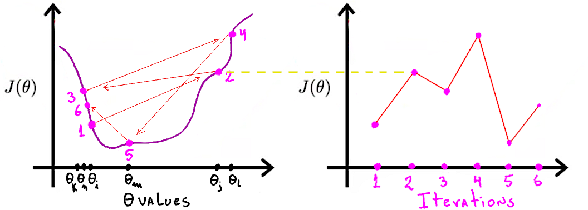
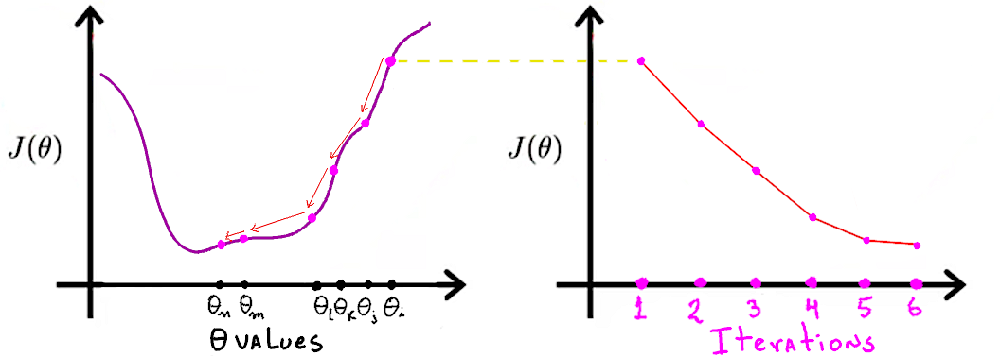
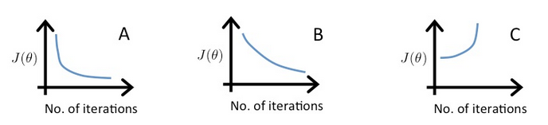

Machine Learning – Week 2
1. Multivariate Linear Regression
1.1. Notation for Multiple Features
The set of training examples to be used is usually in the shape of a table where there are many feature columns and one target column (the price of apartments, in this example).
size bedrooms age price 1200 3 5 9600 1500 4 3 12000 960 8 2 8000 Each training example in the table (each row) is said to be a data point \(d\). The \(i\)-th datapoint is denoted by \(d^{(i)}\). The array of features \(x\) are used by our hypothesis \(h_{\Theta}(x)\) to predict the target \(y\).
\[\text{\(i\)-th row data point}\rightarrow \quad d^{(i)}=\begin{bmatrix} x^{(i)} \\ y^{(i)} \\ \end{bmatrix} \quad \begin{split} &\leftarrow \text{features of \(i\)-th row} \\ &\leftarrow \text{target of \(i\)-th row} \\ \end{split}\]
then, the whole dataset \(D\) can be represented as an array of datapoints:
\[D = \begin{bmatrix} d^{(1)}, d^{(2)}, d^{(2)}, d^{(3)}, \dots \end{bmatrix}\]
- Extended list of features of \(d^{(i)}\): For convenience, it is added an extra 1 at the beginning of the vector \(x\) so in the hypothesis function we have \(n\) parameters and \(n\) features. This 1 matches with the bias parameter \(\Theta_0\). \[x^{(i)} = \begin{bmatrix} x^{(i)}_0 = 1 \\ x^{(i)}_1 \\ x^{(i)}_2 \\ x^{(i)}_3 \\ x^{(i)}_4 \\ \end{bmatrix}\]
- Then, the hypothesis ends up just being the multiplication of the transposed vector of parameters \(\Theta^T\), with the extended vector of features \(x\). (Remember that \(x_0=1\).) \[\begin{split} h_{\Theta}(x) &\xrightarrow{\text{predicts}} y \\ h_{\Theta}(x) &= \Theta_0x_0 + \Theta_1x_1 + \Theta_2x_2 + \Theta_3x_3 + \cdots \\ h_{\Theta}(x) &= \begin{bmatrix}\Theta_0, \Theta_1, \Theta_2 \cdots\end{bmatrix} \times \begin{bmatrix}x_0\\ x_1\\ x_2\\ \cdots\end{bmatrix} \\ h_{\Theta}(x) &= \Theta^T \times x \\ \end{split}\]
1.2. Gradient Descent (GD) for Multiple Variables
- The idea is the same as with less variables. Given that the Cost function is \(\Theta^{T}x^{(i)}\), where \(x^{(i)}\) is the \(i\)-th training example, and \(x^{(i)}_{0} = 1\), to match \(\Theta_0\), then all the derivatives to update all the \(\Theta_{j}\) are easy to compute:
\[\begin{split}
\Theta^{\text{new}}_j := \Theta^{\text{old}}_j -
\textcolor{red}{\alpha}
\textcolor{green}{\frac{\delta}{\delta\Theta_j} J(\Theta)}&\\
%%
\textcolor{green}{\frac{\delta}{\delta\Theta_j} J(\Theta)}& =
\frac{1}{m}\sum^{m}_{i=1}\left(
\big(
h_{\Theta}(x^{(i)})-y^{(i)}
\big)
x^{(i)}_{j}\right)\\
\end{split}\]
- Green: Partial derivative of \(J\) with respect to \(\Theta_j\)
- Red: Learning rate
1.3. GD: Feature Scaling and Normalization
1.3.1. Feature Scaling
- Make sure the values of different features take values that range in similar values, this makes GD converge quickly. (this makes me thing on the disproportioned representation of skin surface in the brain, hands and face are huge, legs and backs are tiny.)
- Different people have different takes in what is a sensible range, but the take-away is “make sure they are in a kinda similar range”.
- This can be acheived by dividing every instance of a feature \(x_j\) by the max value seen in this feature in the whole dataset. This scales all values \(x_j\)s to the range \([0-1]\).
1.3.2. Mean Normalization
- Making the values gravitate around 0, by replacing \(x_j\) with \(x_j - \mu_j\)
- This does not apply to \(x_0\), because it needs to be \(1\).
1.3.3. Both together
- The vid. talks about the denominator being either the range of values \((\text{max}(x_j)-\text{min}(x_j))\) or std deviation. Doing this you end up with values roughly between \([-0.5,0.5]\). \[x^{\text{norm.}}_j := \frac{x_j - \mu_{j}}{\text{max}(x_j) - \text{min}(x_j)}\]
- This denominator was not mentioned in the videos, but I think it is pretty much the same as before, the “max”, by which I am scaling, is also normalized. This leads to values in the range \([-1,1]\). \[x^{\text{norm.}}_j := \frac{x_j - \mu_{j}}{\text{max}(x_j) \textcolor{blue}{- \mu_{j}}}\]
1.4. GD: Learning Rate \(\alpha\)
- The point of learning is to find a \(\Theta^{\star}\) such that \(J(\Theta^{\star})\) is small 1, meaning that the hypothesis \(h_{\Theta^{\star}}(x)\) is, in average, not doing bad for any \(x\) you throw at it.
- Supposedly, the more iterations of learning we accumulate (X axis in the right plot) we get smaller and smaller \(J(\Theta)\), which is the discrepancy between \(h_{\Theta}(x)\) and \(y\). In other words, we should be getting closer and closer to our \(\Theta^{\star}\).
- Then, the point of \(\alpha\) is to determine how quickly we go in the direction of the gradient of \(J(\Theta)\). If my changes in \(\Theta\) (X axis of the left plot) are too abrupt, then, even if I go in the correct direction of the gradient (towards a valley), I can anyway overshoot (as seen by the red arrows in the left plot).
- The effect is that as the training cummulates more and more iterations, we don’t necessarily approach to a smaller \(J(\Theta)\) (as seen in the right plot).
A good debugging technique is to plot \(J(\Theta\) (the right plot) as we refine \(\Theta\) with each iteration, so we can see whether it converges or not.

Here an example with a smaller \(\alpha\). The steps are smaller, so it should take longer to to converge, but the chances of actually converging to our \(\Theta^{\star}\) without getting lost in the way, are better.

- An automatic convergence test could be “if \(J(\Theta)\) is smaller than some \(\varepsilon\), then we say that \(J\) has converged”. But it is often difficult to establish the actual value of such \(\varepsilon\).
It has been demonstrated (by some ML nerds) that if \(\alpha\) is sufficiently small, then it is guaranteed that \(J(\Theta)\) will decrease at every single iteration. The cost of that is that the learning happens to be super slow. Here three examples that shows the feeling of what happens when we vary \(\alpha\):
- A \(\alpha=0.1\)
- B \(\alpha=0.01\)
- C \(\alpha=1\)

1.5. Features and Polynomial Regression
- Sometimes we may want to move away from the shape \(\Theta_ix_i + \Theta_{i+1}x_{i+1} + \cdots\). In other words, from a linear function.
We may want to create new variables as functions of the original features. For example, in house selling, for features:
- frontage
- depth
I may create a new feature
- area = frontage \(\times\) depth
And now my hypothesis may be in function of the area, rather than the original variables.
2. Computing Parameters Automatically
3. Programming Assignment
Footnotes:
\(J(\Theta^{\star})\) small, not necessarily the smallest. That would be to find the global minima (wich is cool, but usually unrealistic).